Error 404
No plate at this address.
Requested
The page may have moved, or the link may be mistyped. Everything in the archive is one step from here.

Error 404
Requested
The page may have moved, or the link may be mistyped. Everything in the archive is one step from here.
